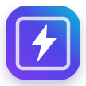

PWA • Android + iPhone
WikiMaster Auto
Tes boosters, ton historique et tes notifications sur tous tes appareils.
Compte
Vérification…
WikiMasters
Chargement…
Vérification du backend.
Connexion unique depuis un PC
Le PC sert seulement une fois à transférer ta session WikiMasters vers cette PWA. Ensuite le téléphone reste connecté.
Code à saisir sur le PC
—
- Sur un PC, ouvre wiki-masters.com et connecte-toi normalement.
- Sur le PC, ouvre aussi tdi-rosa.github.io/auto_booster/pc.html.
- Sur cette page, clique Copier la commande, puis colle-la dans la console WikiMasters (F12 → Console).
- Quand elle te le demande, tape le code affiché ci-dessus.
J’attends la connexion du PC…
Le code expire après 10 minutes. Ton mot de passe n’est jamais envoyé à WikiMaster Auto.
Automatisation
Ouverture des boosters
Le backend ouvre les boosters même quand la PWA est fermée. L’exécution réelle peut varier de quelques minutes selon le scheduler.
Aucune ouverture serveur enregistrée.
Notifications
Alertes de rareté
Notification à partir de UR
Toutes les cartes restent dans l’historique. Ce réglage contrôle seulement les notifications.
Collection
Historique des cartes
0 carte
Aucune carte synchronisée
Les cartes ouvertes par le backend apparaîtront ici.
Installation
Installer l’app
Ajoute WikiMaster Auto à ton écran d’accueil.